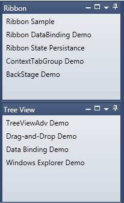
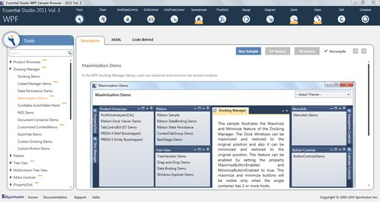

This feature helps to Maximize/Minimize Docked Windows for better usage of each window. This support is enabled only when the parent container of a specific element contains more than one host.
Use Case Scenario
· It helps a particular docked window to provide a maximized view
· It can minimize a docked window and can be restored when needed

Figure 367: Minimise/Maximize Support
Samples Link
To view samples:
1. Click Start-->All Programs-->Syncfusion-->Essential Studio <version number> -->Dashboard. (Refer section 2.2)
2. In the Dashboard window, click Run Locally Installed Samples for WPF under User Interface Edition panel.

Figure 368: Sample Browser
The WPF Sample Browser window is displayed.
 Properties, Methods and Events Tables
Properties, Methods and Events Tables